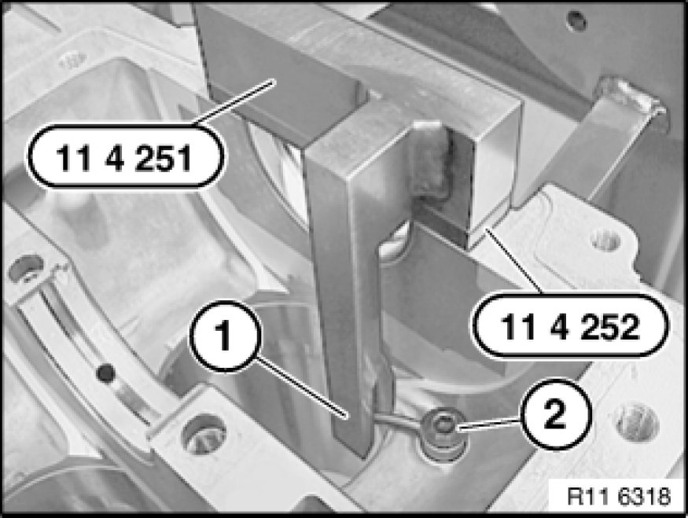
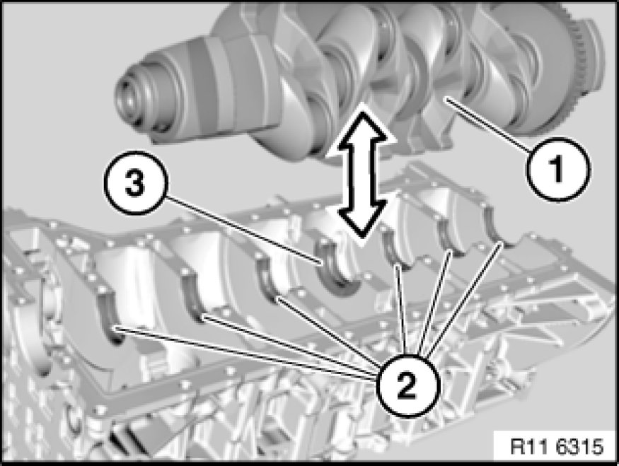
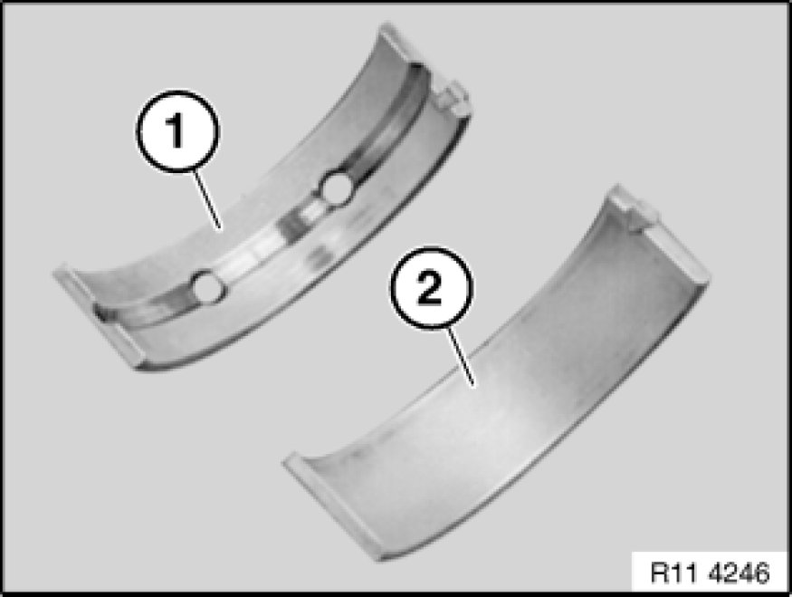
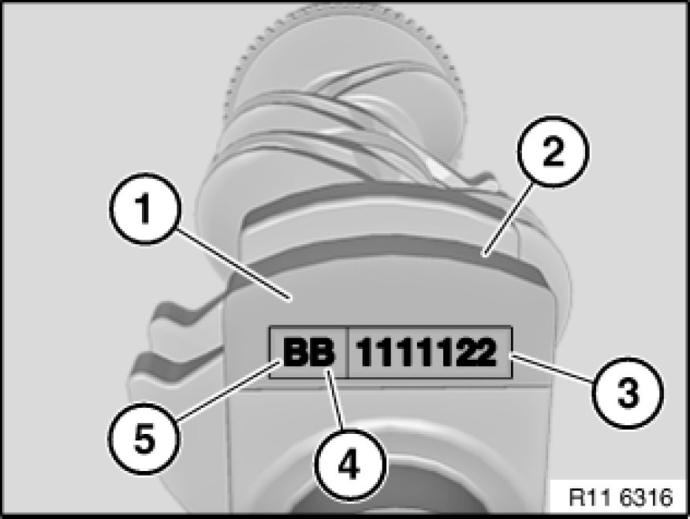
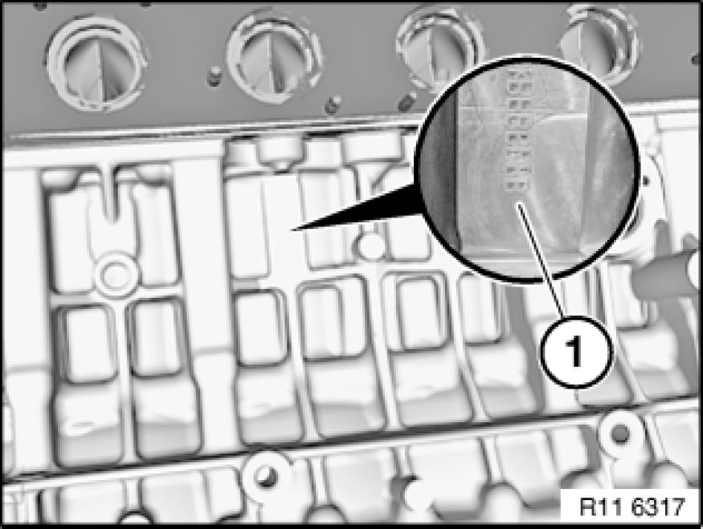
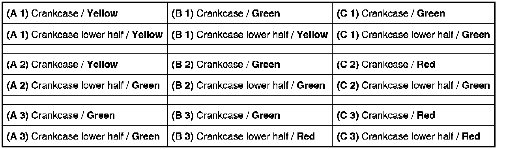
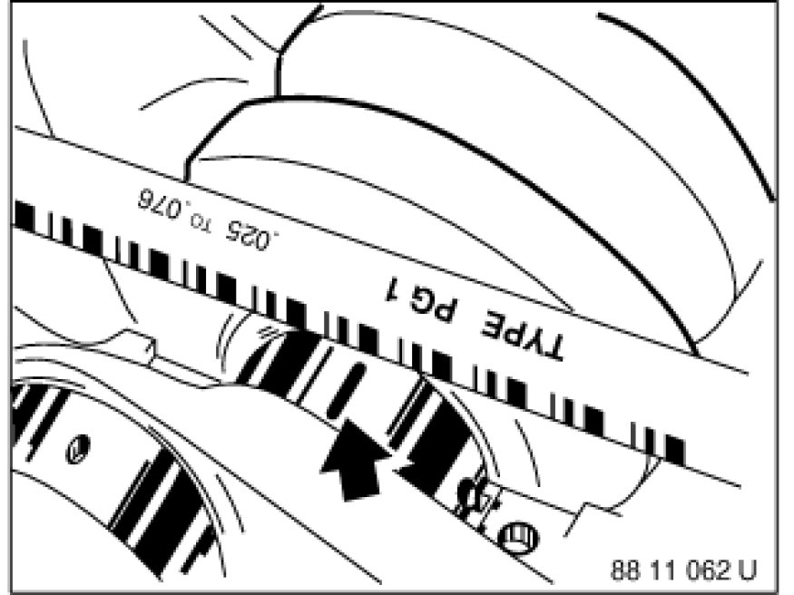

Crankshaft Main Bearing: Service and Repair
11 21 531 - Replacing all main crankshaft bearing shells (N52K)

Special tools required:
- 00 2 590
- 11 4 251 11 4 250 Gauge with Adapter Plate
- 11 4 252 11 4 250 Gauge with Adapter Plate
- 11 4 470 11 4 470 Cleaning Kit

Important!
Aluminium-magnesium materials.
No steel screws/bolts may be used due to the threat of electrochemical corrosion.
A magnesium crankcase requires aluminium screws/bolts exclusively.
Aluminium screws/bolts must be replaced each time they are released.
Aluminium screws/bolts are permitted with and without
color coding (blue).
For reliable identification:
Aluminium screws/bolts are not magnetic.
Jointing torque and angle of rotation must be observed without fail (risk of damage).

Necessary preliminary tasks:
- Remove crankshaft Service and Repair

Checking position of oil spray nozzles:
Insert special tool 11 4 251 11 4 250 Gauge with Adapter Plate in screw connection of main bearing.
Note:
Special tool 11 4 252 11 4 250 Gauge with Adapter Plate must be pre-installed at the seventh main bearing.
Check position of oil spray nozzle (2) according to position (1) on special tool 11 4 251 11 4 250 Gauge with Adapter Plate.
If necessary, adjust and secure oil spray nozzle (2).
Tightening torque 11 11 5AZ 11 11 Crankcase.

Remove bearing shells (2) and guide bearing shell (3).
Note:
Guide bearing shell (3) is a thrust bearing.
Observe bearing classification.

Installation Note:
Bearing shell (1) with lubricant groove must be fitted in crankcase.
Bearing shell (2) without lubricant groove must be fitted in bedplate.
Important!
Allocation of bearing points:
Bearing point 1 is at the front on the timing chain drive in the direction of travel.

Surface (1) for identification on crankshaft web 1.
Seven-digit part number (2).
Main bearing classification (3) for crankcase lower half (bedplate), code numbers 1 2 3, see table.
Note:
Code letters (4 and 5) are exclusively required for a machined crankshaft.
Code letter (4) as per table, main bearing.
B= build date 1 (B 1 2 3 -0.25 mm).
B= build date 2 (C 1 2 3 -0.50 mm).
Code letter (5) as per table, lift bearing.
B= construction stage 1 (-0.25mm).
C = construction stage 2 (-0.50 mm)
Observe bearing classification.

Main bearing classification (1) in crankcase, code letters A / B or C, see table.
Installation Note:
When all the letters and number code have been determined, the bearing shell color must be allocated, see table.

Installation Note:
The letter / number combination produces a bearing shell pairing.
Identification by different colors.
Important!
First bearing point is on the timing drive.
The color combination Yellow and Red must not be fitted.
Engine damage will result if excessively small bearing play is determined.
Code letters on crankcase:
Code letter A = bearing shell (1) color Yellow.
Code letter B = bearing shell (1) color Green.
Code letter C = bearing shell (1) color Red.
Code numbers on crankshaft:
Code number 1 = bearing shell (2) Yellow.
Code number 2 = bearing shell (2) Green.
Code number 3 = bearing shell (2) Red.
Important!
The color combination Yellow and Red must not be fitted; the bearing colors Green / Green must be selected for this color combination, see table.
Installation example:
For bearing 1 with code letter A on the crankcase and code number 1 on the crankshaft bearing shell (1) with the color Yellow is required for the crankcase and bearing shell (2) with the color Yellow for the crankcase lower half (bedplate).
Bearing 2: - A and 2 colors Yellow and Green.
Bearing 3: - B and 2 colors Green and Green.
Bearing 4: - C and 2 colors Red and Green.
Bearing 5: - B and 1 colors Green and Yellow.
Bearing 6: - C and 3 colors Red and Red.
Bearing 7: - C and 1 colors Green and Green.
The color combination Yellow and Red must not be fitted.
Installation Note:
Possible color combinations for mounting the crankshaft in the crankcase.

Install bearing shells (2) and guide bearing shell (3).
Installation Note:
Clean all sealing surfaces.
Important!
Do not use any metal-cutting tools.
Clean sealing faces with special tool 11 4 470 11 4 470 Cleaning Kit only.
Determine bearing play with special tool 00 2 590.
Installation Note:
All measuring points must be clean and free from oil and grease. If necessary, clean all measuring points.
Use the existing screws to determine the bearing play.
Set up bedplate Service and Repair with bearing shells.

Remove bedplate.
Read off bearing play at width of flattened plastic thread and measurement scale.
Installation Note:
Remove plastic thread.
Apply a light coat of oil to bearing shells and crankshaft.
Install bedplate Service and Repair.
Assemble engine.